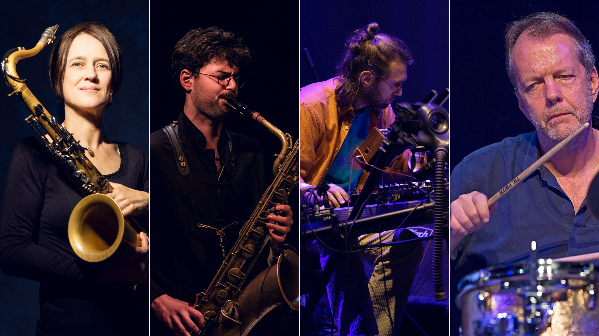

Koper8 — Giuseppe Doronzo, Jannis Anastasakis, Ingrid Laubrock and Tom Rainey. Photo by Yiğit Demircioğlu, courtesy Bimhuis. Ingrid Laubrock portrait © Mardok.Music as a bridge
Giuseppe Doronzo has lived long enough in the Netherlands that the Dutch press has stopped calling him “the Italian.” Trouw now just says he “holds a brilliant argument for the baritone sax as a leading instrument,” while Jazzism called him “one of the most subtly articulate baritone saxophone players in the world.”
This is a musician who arrives in the Lowlands with classical training, absorbs the improvised-music discipline that Amsterdam has spent fifty years refining around Bimhuis — and then loops it back out to Puglia, or Groningen, or Brooklyn, and becomes a bridge instead of an emigrant. Doronzo is a sharp example of how that pattern works, and on 25 October, at 20:30, he brings its newest iteration into the Bimhuis.
Who is Giuseppe Doronzo
Born in 1987 in Barletta, Doronzo did the full classical apprenticeship first: saxophone at the “N. Piccinni” Conservatory in Bari, then a Master’s in classical-contemporary saxophone at the “N. Rota” Conservatory in Monopoli. He moved to the Netherlands in 2012 to study jazz and composition at the Prins Claus Conservatory in Groningen — with Michael Moore among his teachers — from where he graduated cum laude in 2015.
Doronzo focuses his research on the baritone saxophone, pushing it as a lead voice, and he weaves three strands: contemporary classical technique (multiphonics, extended articulations), free improvisation in the European tradition (Moore, Han Bennink, Wilbert de Joode all appear in his orbit), and non-Western material — makam and microtonal work, reed and flute instruments including mizmar and bansuri. On the Koper8 date he’s also credited with Iranian bagpipe.
The recognition has been steady: he was named “Music Revelation 2018” by the international jazz-critic poll El Intruso (through All About Jazz’s Karl Ackermann). In 2022 he won a Buma Music in Motion Award for best original composition for a short film (the Roman Ermolaev-directed GOYA, which shares its title with Doronzo’s 2018 solo album). His current working groups include the AVA Trio (with bassist Esat Ekincioglu and percussionist Pino Basile), the duo Aterraterr with Basile, the quintet Falga, the Michael Moore Bigtet, All Ellington, Raoul van der Weide’s Xavier Pamplona Ensemble, and now Koper8. He teaches, and is a Drake Mouthpieces and Wood Wind Design artist.
The Amsterdam–Chicago axis, 25 years in
In June 1998, at Konkurrent’s Koeienverhuur studio in Amsterdam, The Ex and Tortoise spent two days recording In the Fishtank 5 — six tracks, released in 1999 on Konkurrent, that welded The Ex’s punk-informed improvisation to Tortoise’s Chicago post-rock architecture. The Ex brought Terrie, Katrin, Luc, GW Sok, and guitarist Andy Moor, who had joined the band in 1990 after moving to the Netherlands. Tortoise brought Dan Bitney, John Herndon, John McEntire, Douglas McCombs, and guitarist Jeff Parker (with Rob Mazurek on cornet).
That session set a template the Konkurrent orbit has been extending ever since: North American improvisers looping through Amsterdam not as tourists but as collaborators, and Amsterdam-based players heading back the other way. Andy Moor is one of the through-lines. Twenty-six years after Fishtank 5, he is on Futuro Ancestrale (Clean Feed, 2024) with Doronzo and Chicago-trained drummer Frank Rosaly — part of the same International Anthem-orbit Chicago cohort as cornettist Ben LaMar Gay and Jeff Parker — recorded live at Bimhuis in June 2022 as a Red Light Jazz Festival commission, and later named among the year’s best by RAI Radio Tre’s Battiti year-end special.
Which is what makes autumn 2026 at Bimhuis worth watching as a pair, not two isolated nights. Rosaly opens the run on 1 October with his REFLEX quartet and Evan Parker (FOMOdam feature); Doronzo closes it on 25 October with Koper8, on the same stage where Futuro Ancestrale was cut in June 2022. Neither night happens in a vacuum.
The Koper8 project
Koper is Dutch for copper (and, by extension, brass). Koper8 is a new quartet co-founded by Doronzo and Athens-based guitarist and pedal-builder Jannis Anastasakis. The concept, as the band frames it, is our telecommunications infrastructure: we call it wireless, but almost all of it still runs along the ocean floor through undersea cables.
Koper8 turns that hidden network into a musical event: improvisation as live broadcast, with the noise deliberately preserved — the crackle, the interference, the pressure of ocean on the line. Baritone and tenor saxophones are pushed through handmade electronic effects, drums modulate the signal, and deep drones fold into psychedelic textures.
The debut album was recorded at Figure 8 Studios in Brooklyn and comes out this autumn on Defkaz Records. The Bimhuis show is the band’s first European appearance and doubles as the album’s release concert. It is programmed under the venue’s Impro Focus strand.
The quartet
With Doronzo as its pivot and Anastasakis as its co-founder, Koper8 connects two European improvisers with two Brooklyn heavyweights: tenor saxophonist Ingrid Laubrock and drummer Tom Rainey. Both have appeared in Amsterdam many times, in a range of formations.
Jannis Anastasakis (guitar and electronics), the co-composer with Doronzo, is Athens’s most idiosyncratic guitarist. He founded JAM Pedals, has been a working duo partner of the great ECM singer Savina Yannatou since 2017, and has performed with Norwegian trumpeter Arve Henriksen among others.
Ingrid Laubrock (tenor sax) is the reference point for the current New York avant-jazz saxophone school. Born in Stadtlohn, Germany in 1970, based in London through the 1990s and 2000s, and in Brooklyn since 2009, she leads Anti-House, Sleepthief, Ubatuba and her own septet, and she is a longtime member of the Wet Ink Ensemble.
Tom Rainey (drums), born 1957 in Santa Barbara, is Laubrock’s most frequent collaborator and a foundational Brooklyn improvised-music drummer whose CV runs through Tim Berne, Mark Helias, Kris Davis and Mary Halvorson. The Tom Rainey Trio with Laubrock and Halvorson (albums including Pool School and Hotel Grief on Intakt) is one of the touchstone small-group projects of the last fifteen years.
It is not that common for a Bimhuis night to have New Yorkers arrive as guests of an Amsterdam project, curated and led from here. It’s also a rare chance to hear Doronzo in a setting closer to the noisy, electronic, cross-continental edge of his practice than the more folk-leaning AVA Trio or the solo GOYA world.
Practical
- Date: Sunday 25 October 2026
- Doors / café: 18:30, start 20:30 (ends 22:00)
- Venue: Bimhuis, Zaal — Piet Heinkade 3, 1019 BR Amsterdam
- Series: Bimhuis Impro Focus
- Lineup: Giuseppe Doronzo (baritone sax / Iranian bagpipe), Ingrid Laubrock (tenor sax), Jannis Anastasakis (guitar / electronics), Tom Rainey (drums)
- Tickets: €21 seated / €18 standing (includes €2 service fee; reduction tickets available)
Related on FOMOdam
Doronzo shares more than half his Amsterdam address book with Frank Rosaly — the two recorded together as the Doronzo / Andy Moor / Frank Rosaly trio on Futuro Ancestrale (Clean Feed, 2024), from a debut set at Bimhuis in June 2022, and they both orbit the same alt-jazz axis (Bimhuis, Splendor, WORM Rotterdam). If this feature interests you, see our feature on Rosaly’s REFLEX quartet at Bimhuis on 1 October.
- The pair: Frank Rosaly’s REFLEX quartet at Bimhuis, 1 Oct 2026 — the other half of the autumn Amsterdam–Chicago axis.
- All events on 25 October 2026
- Full October 2026 calendar
- Back to FOMOdam